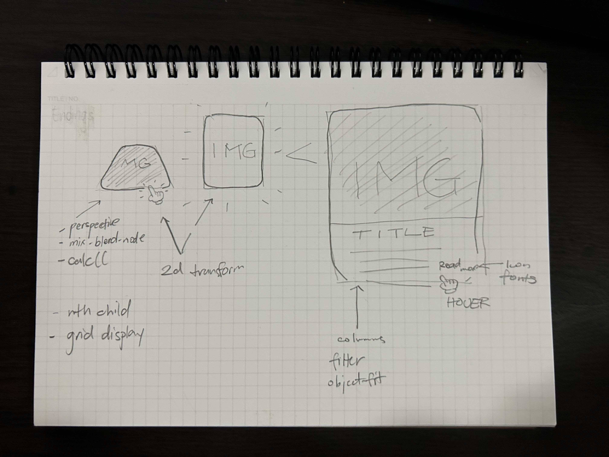

This website is supposed to show some popular examples of the Dutch Golden Age artwork.

I was originally planning to use the following tools, shown in the image above, to display an image of the painting that is originally faced down.
Then uses transform or perspective to lay up the image, then with a delay, display the information that describes the painting and the era it was from and who painted it
amongst other important information.
Image References: